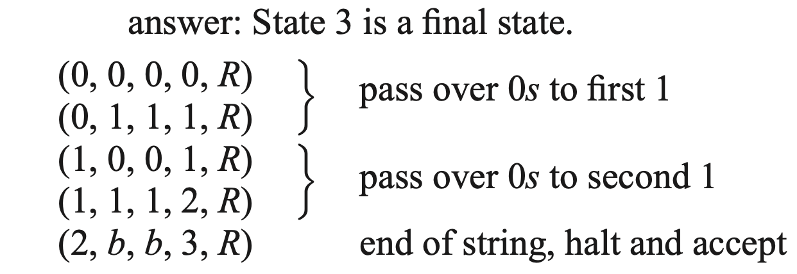

Chapter 9: Finite-State Machines, Turing Machines
Section 9.4 Turing Machines
We noted that S = {\(0^n\)\(1^n\) | n ≥ 0} cannot be recognized by FSMs because FSMs have no memory to match arbitrary numbers of symbols. In this section, we will use Turing machines, which have memory, to recognize this set.
Turing Machines as Set Recognizers
Although the Turing machine computations we have seen so far are not particularly meaningful, we will use the Turing machine to do two kinds of jobs. First, we'll use it as a recognizer, much as we considered finite-state machines as recognizers in the previous section. We can even give a very similar definition, provided we first define a final state for a Turing machine. A final state in a Turing machine is one that is not the first symbol in any quintuple. Thus, on entering a final state, whatever the symbol read, the Turing machine halts.Definition
Turing Machine Recognizer is a machine that accepts strings that belong to a set, and halts in a final state. If the input belongs to the set (the language), the machine halts in a final (accepting) state.
| Situation | What Happens | Result |
|---|---|---|
| Input belongs to the set | Machine halts in a final (accepting) state | ✅ Accept |
| Input not in the set, machine halts in a non-final state | Machine halts but in a non-final (non-accepting) state | ❌ Reject |
| Input not in the set, machine never halts | Machine loops forever without reaching a final state | ❌ Reject |
Turing Machine as Recognizers
We can now build a Turing machine to recognize our old friend:The goal is to match the same number of 0's followed by the same number of 1's. One possible strategy (the first approach) is to count the number of 0’s as they are read, then compare this count to the number of 1’s. However, even though a Turing machine has memory, managing explicit counting would make the machine design much more complicated. Instead, we use a simpler strategy. The machine is based on our second approach to this recognition problem, sweeping back and forth across the input and crossing out 0–1 pairs.
How the Machine Works:
- 1. Find the first 0.
- 2. Cross it out (mark it with X).
- 3. Move right to find the first 1.
- 4. Cross it out (mark it with X).
- 5. Go back to the left and repeat.
- 6. If no 0's or 1's are left, it accepts.
Note:
- ☆ State 0: Initial State
- ♣ The purpose of State 0 is to find the first unmarked 0 and start the crossing-out process.
- ♣ If the tape is already blank (b), it means the input was empty (λ), and the machine accepts immediately (move to State 6).
- ♣ Otherwise, it looks for the first 0, crosses it out (replaces it with an X), then moves right to find the corresponding 1 (moving into State 1).
- ☆ State 1: After the machine crosses out a 0 in State 0, it moves into State 1.
- ♣ State 1’s job is to move right across the tape (over 0’s, X’s, and 1’s) to the end of the input (blank b), and then move back left to find the last unmarked 1.
- ☆ State 2: After State 1 reaches the blank (b) at the end of input or encounters an X, the machine moves one step left and enters State 2.
- ♣ State 2's job is to find the last unmarked 1 and cross out that 1 by writing X, and then move into the next phase (State 3).
- ♣ If the machine in State 2 encounters a 1 (2,1,X,3,L), it will cross out that 1 by writing X, move one step to the left, and then transition into State 3.
- ♣ Otherwise, if the machine in State 2 reads a 0, an X, or a blank (i.e., (2,0,...), (2,X,...), or (2,b,...)), it will halt and reject the input.
- ☆ State 3: After crossing out a 1 in State 2, the machine needs to move left across the tape to find the next unmarked 0 to process.
- ♣ State 3 is the "sweeping left" phase: getting ready to either start a new 0–1 matching cycle or detect completion.
- ☆ State 4: If State 3 finds an unmarked 0 while moving left, it switches to State 4 to continue moving left across the remaining 0’s until it reaches the start of the tape.
- ♣ After finding an unmarked 0 (in State 3), State 4 keeps moving left across all remaining 0’s until it reaches the first X (the beginning of the tape), so the machine can reset and start matching the next 0–1 pair.
- ☆ State 5: If State 3 sees an X while moving left, it switches to State 5.
- ♣ After sweeping back to the beginning and finding that there are no more unmarked 0’s left, State 5 checks if the input has been completely processed and decides if the machine should accept.
- ☆ State 6: Accept (Final State)
| In State 3, read... | What happens |
|---|---|
| 1 | Keep moving left (stay in State 3) |
| 0 | Switch to State 4 (process the next 0) |
| X | Switch to State 5 (check for end/completion) |
| b | (Rare, but could indicate error or reject) |
| In State 4, read... | Action |
|---|---|
| 0 | Keep moving left (stay in State 4) |
| X | Switch to State 0 (start matching next 0–1 pair) |
| b | (Unexpected — could indicate an error or rejection) |
| In State 5, read... | Action |
|---|---|
| X | Switch to State 6 (accept input) |
Practice
1.2. Find a Turing machine that recognizes \(0^*\)1\(0^*\)1

Turing Machine Simulator
a web-based Turing machine simulator, written in Javascript, with some examples Turing machine programs.Reference
saylor academyBrilliant